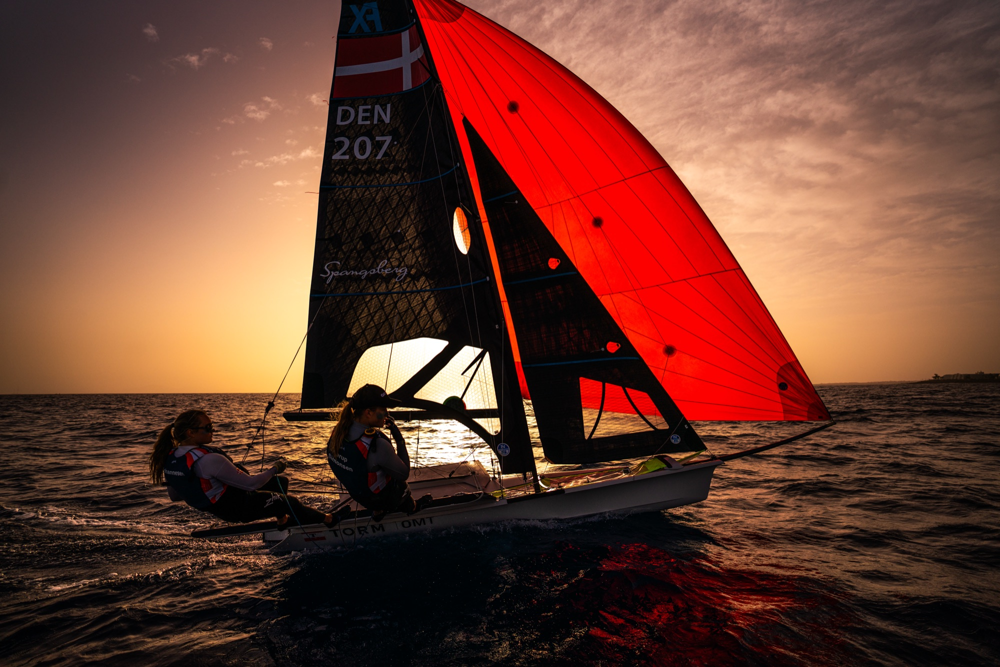
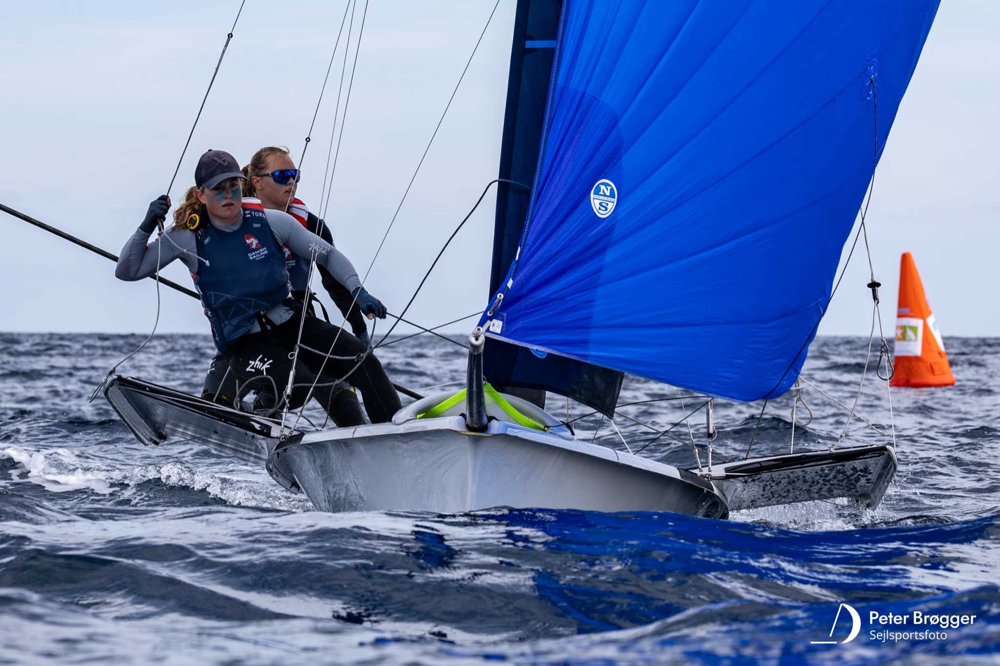

20258. plads ved VM i Sardinien — vores bedste resultat til dato
Vi sejlede os til en flot 8. plads i guldfeltet ved VM i Sardinien — det bedste resultat i vores karriere som seniorbesætning, og endnu et skridt på vejen mod OL 2028.

2025Vi sejlede os til en flot 8. plads i guldfeltet ved VM i Sardinien — det bedste resultat i vores karriere som seniorbesætning, og endnu et skridt på vejen mod OL 2028.

2025Ved sæsonens første stævne i seniorfeltet sejlede vi side om side med tidligere OL-deltagere og sikrede os en samlet 7. plads — som bedste danske team.
 2026
2026
Vi var til Senior-VM i Quiberon, Frankrig, hvor det blev til en samlet 18. plads. Nu går blikket fremad mod næste sæson og flere skridt mod OL 2028.
Flere opdateringer er på vej — følg med på @srsailing for de seneste nyheder.